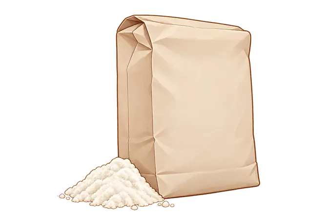
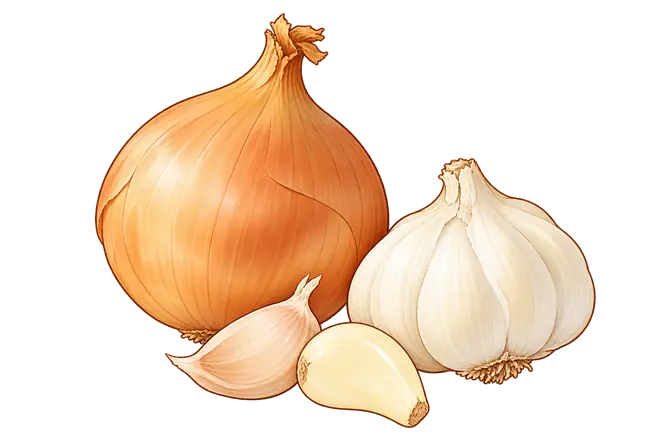

Tre figure per Manitoba, fruttani/FODMAP e istamina, più una scena di servizio della pizza. Le immagini mostrano oggetti e gesti osservabili: le proprietà chimiche restano spiegate nel testo.
Apri ogni confronto per vedere gli originali, le modifiche e le fonti del contenuto. Questo lotto è in revisione e non è ancora inserito nell’app.
1. Manitoba · Leggere le caratteristiche

Farina confezionata e un piccolo campione sfuso. Per scegliere una Manitoba consulta forza W e caratteristiche dichiarate dal produttore: l’aspetto della polvere non basta a identificarla.
Sacco reso generico, senza marchi o scritte. Il campione di farina è ricomposto dal primo piano della foto; il vasetto di lievito madre è omesso. Non rappresenta una prova di forza o un contenuto proteico misurato. Le caratteristiche del prodotto fotografato non definiscono tutte le farine commercializzate come Manitoba.
2. FODMAP · Aglio e cipolla

Aglio e cipolla sono esempi di fonti di fruttani, un gruppo di FODMAP. Non sono un elenco completo: l’immagine non misura il contenuto né indica porzioni o tolleranza personale.
Immagine originale · Monash University / Monash FODMAP
Cosa è stato modificato e cosa non si può dedurre
Selezione e ricomposizione di cipolla, bulbo d’aglio e spicchi dalla fotografia; porri e cipollotti omessi. Nessun semaforo, soglia, piano dietetico o equivalenza tra FODMAP e glutine.
Salame fermentato: un esempio di alimento in cui possono formarsi ammine biogene, tra cui l’istamina. Il suo contenuto non si vede nella fetta e non si deduce dal colore o dalla stagionatura dichiarata.
Immagine originale · Consorzio Cacciatore Italiano
Cosa è stato modificato e cosa non si può dedurre
La foto del Consorzio documenta la forma del prodotto e il contatto delle dita, non un’analisi chimica. Aspetto semplificato; scritte e frecce rimosse. Nessuna deduzione sulla concentrazione del campione fotografato, sulla sicurezza o sulla tolleranza personale.
Una porzione di pizza già cotta viene presa dal tagliere per servirla. La scena accompagna il consiglio sul servizio dopo la cottura: non è un confronto visivo tra pizza secca e morbida.
Immagine originale · Patrick Marinello / King Arthur Baking; food styling Yekaterina Boytsova
Cosa è stato modificato e cosa non si può dedurre
Tre porzioni ricomposte dalla foto, una sostenuta dalla mano; il supporto è reso come un semplice tagliere in legno. Omesse altre mani, ciotole, utensili e stoviglie. Il colore non certifica cottura, temperatura, umidità o sicurezza. La ricetta della pizza sfogliata fotografata non viene estesa a tutti gli stili.